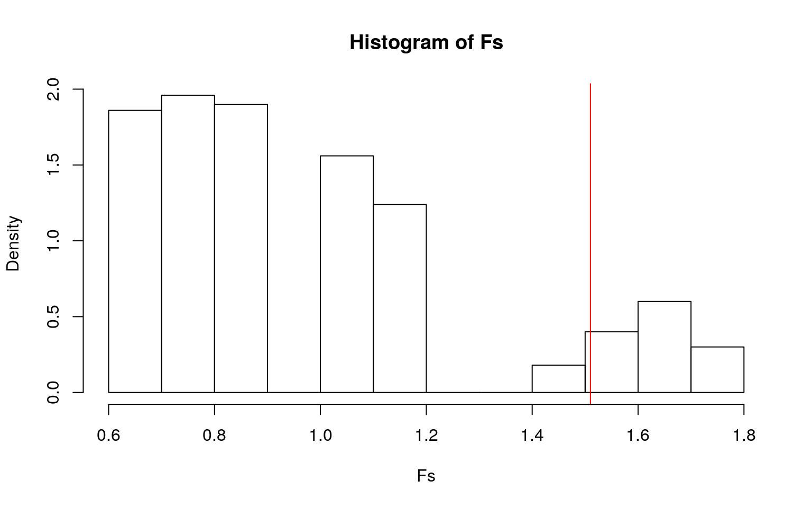
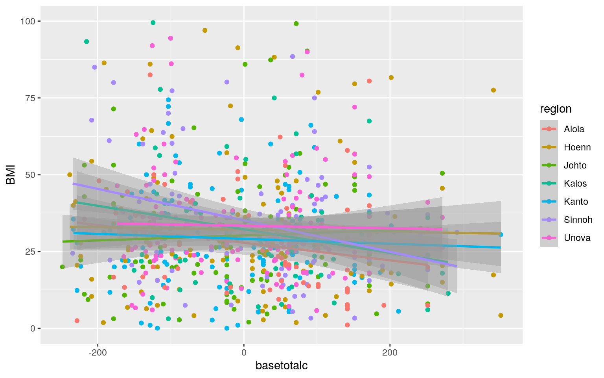
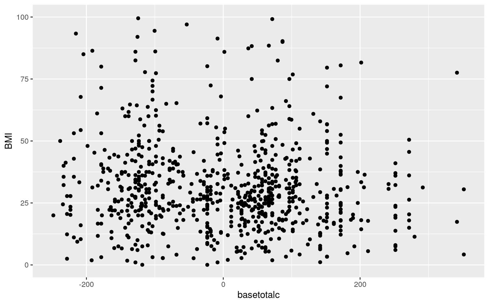
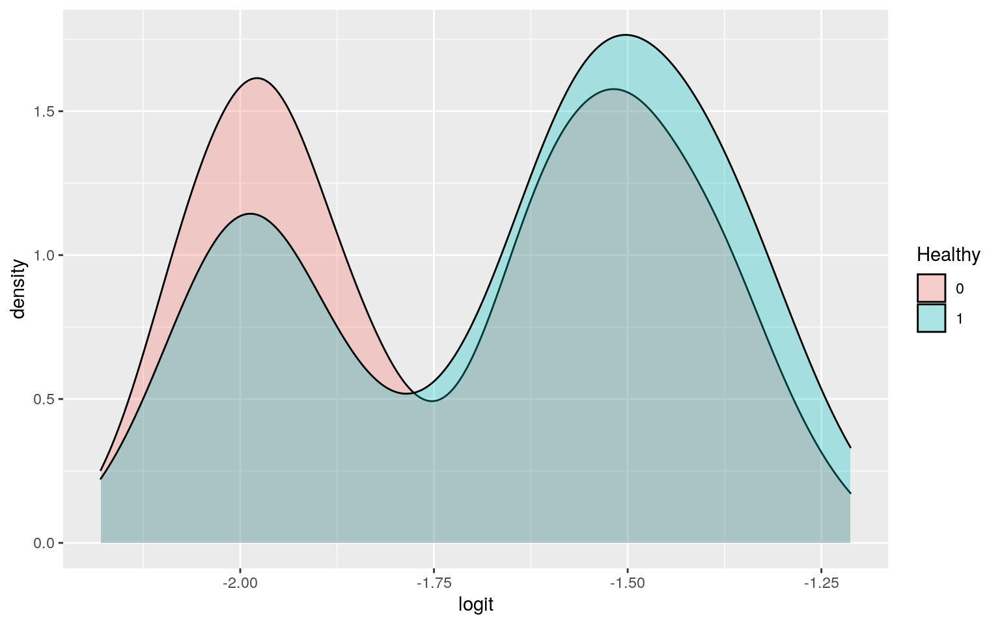
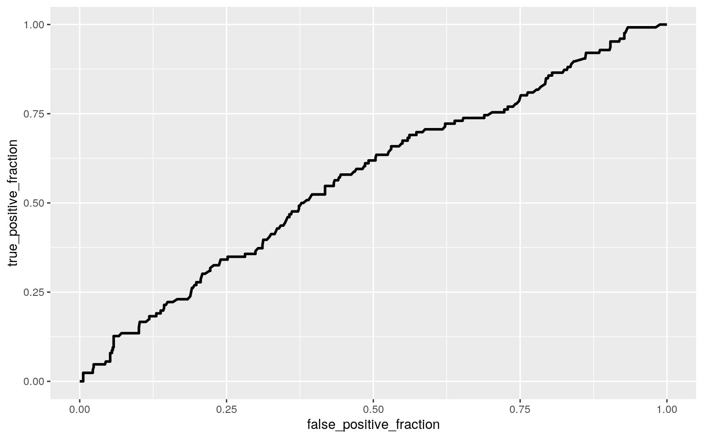

0. (5 pts) Introduce your dataset and each of your variables (or just your main variables if you have lots) in a paragraph. What are they measuring? How many observations?
pkmn<-read.csv("pokemon.csv",header=TRUE)
tidypkmn<-pkmn%>%select(name,type1,type2,hp,attack,defense,sp_attack,sp_defense,speed,base_total,generation,weight_kg,height_m,)%>%mutate(BMI=weight_kg/(height_m)^2)%>%mutate(Healthy=ifelse(BMI<=24.9&BMI>=18.5,1,0))%>%mutate(region=recode(generation,"1"="Kanto","2"="Johto","3"="Hoenn","4"="Sinnoh","5"="Unova","6"="Kalos","7"="Alola"))For project 2, I have chosen to continue with the theme of my project 1 and go with pokemon. With my dataset, I will be focusing on the BMIs of pokemon from generations 1-7 and how they might relate to the regions they can be found in. Hopefully, with my focus on BMI, I should differentiate myself enough from the examples done in class/lab where they centered on if a pokemon was a legendary or not. This dataset is slightly different from the one in project 1. Besides the usual names, types, stats, weight, height, and BMI, I have created a new variable: Healthy. Healthy fills in the spot as my binary variable as it gives a 1 if a pokemon is in the healthy BMI range defined for humans (18.5-24.9) and 0 if a pokemon is either below or above the healthy range. Additionally, this dataset contains pokemon from generations 1-7 for a total of 801 pokemon (not including megas or alolan forms). Because of this inclusion, I have also created a new categorical variable called region that will give the name of the region the pokemon was first introduced in. Finnaly, the original dataset comes from Kaggle by the user Rounak Banik (https://www.kaggle.com/rounakbanik/pokemon).
1. (15 pts) Perform a MANOVA testing whether any of your numeric variables (or a subset of them, if including them all is unreasonable or doesn’t make sense) show a mean difference across levels of one of your categorical variables (3). If they do, perform univariate ANOVAs to find response(s) showing a mean difference across groups (3), and perform post-hoc t tests to find which groups differ (3). Discuss the number of tests you have performed, calculate the probability of at least one type I error (if unadjusted), and adjust the significance level accordingly (bonferroni correction) before discussing significant differences (3). Briefly discuss some of the MANOVA assumptions and whether or not they are likely to have been met here (no need for anything too in-depth) (2).
pman1<-manova(cbind(weight_kg,height_m)~region,data=tidypkmn)
summary(pman1)## Df Pillai approx F num Df den Df Pr(>F)
## region 6 0.033492 2.2538 12 1588 0.007983 **
## Residuals 794
## ---
## Signif. codes: 0 '***' 0.001 '**' 0.01 '*' 0.05 '.' 0.1
' ' 1summary.aov(pman1)## Response weight_kg :
## Df Sum Sq Mean Sq F value Pr(>F)
## region 6 204089 34015 2.9304 0.007812 **
## Residuals 794 9216246 11607
## ---
## Signif. codes: 0 '***' 0.001 '**' 0.01 '*' 0.05 '.' 0.1
' ' 1
##
## Response height_m :
## Df Sum Sq Mean Sq F value Pr(>F)
## region 6 5.03 0.83896 0.7314 0.6244
## Residuals 794 910.80 1.14711pairwise.t.test(tidypkmn$weight_kg,tidypkmn$region,p.adj="none")##
## Pairwise comparisons using t tests with pooled SD
##
## data: tidypkmn$weight_kg and tidypkmn$region
##
## Alola Hoenn Johto Kalos Kanto Sinnoh
## Hoenn 0.04653 - - - - -
## Johto 0.00290 0.20646 - - - -
## Kalos 0.00910 0.32598 0.87975 - - -
## Kanto 0.00059 0.09822 0.82047 0.71321 - -
## Sinnoh 0.19837 0.48208 0.06413 0.12441 0.02335 -
## Unova 0.00247 0.24689 0.81122 0.95961 0.60009 0.07062
##
## P value adjustment method: none1+2+21 #1 MANOVA, 2 ANOVAs, 21 t tests for a total of 24 hypothesis tests.## [1] 241-(0.95)^24 #0.708 probability of Type I error## [1] 0.7080110.05/24 #0.00208 adjusted Bonferroni adjusted significant level## [1] 0.002083333MANOVA was performed to test if either weight or height showed a mean difference across regions (the other numeric variables weren’t included since I wanted to focus on the relation between weight/height and region). MANOVA results revealed at least one of the regions differs by weight/height (Pillai=0.033, F=2.254, p-value=0.008). The following 2 ANOVAs revealed that only weight had region differences (F=2.93, p-value=0.008). After bonferroni adjustment, out of the 21 post-host t tests, only the KantoxAlola significantly differed. In the end, 24 hypothesis tests were performed (1 MANOVA, 2 ANOVAs, 21 t tests) with a 70.8% chance that a Type I error occurred. In terms of the MANOVA assumptions, many were broken. Instead of random samples, the dataset contains essentially every pokemon up to generation 7 so the whole population was used for statistical analysis. There are some unique pokemon out there (example being one the size of a football weighing an outrageously large amount) so there are bound to be outliers. And finally, at least for weight (ranging from a leaf to Godzilla), there was such a wide range that the assumptions of normality and variance were most likely not met.
2. (10 pts) Perform some kind of randomization test on your data (that makes sense). The statistic can be anything you want (mean difference, correlation, F-statistic/ANOVA, chi-squared), etc. State null and alternative hypotheses, perform the test, and interpret the results (7). Create a plot visualizing the null distribution and the test statistic (3).
summary(aov(BMI~region,data=tidypkmn))## Df Sum Sq Mean Sq F value Pr(>F)
## region 6 1.126e+08 18761144 1.51 0.172
## Residuals 794 9.866e+09 12426281obs_F<-1.51
Fs<-replicate(500,{
newa<-tidypkmn%>%mutate(BMI=sample(BMI))
SSW<-newa%>%group_by(region)%>%summarize(SSW=sum((BMI-mean(BMI))^2))%>%summarize(sum(SSW))%>%pull
SSB<-newa%>%mutate(mean=mean(BMI))%>%group_by(region)%>%mutate(groupmean=mean(BMI))%>%summarize(SSB=sum((mean-groupmean)^2))%>%
summarize(sum(SSB))%>%pull
(SSB/6)/(SSW/794)
})
mean(Fs>obs_F) #p-value## [1] 0.112hist(Fs,prob=T);abline(v=obs_F,col="red",add=T) The null hypothesis would be that there is no significant difference in BMI across the regions while the alternative hypothesis would be that there is a significant difference in BMI in at least one of the regions. After randomization breaks any potential association between region and BMI, the F-statistic was calculated and averaged. Since p-value=0.112, the null hypothesis cannot be rejected and the conclusion that the regions do not differ in BMI stands.
3. (40 pts) Build a linear regression model predicting one of your response variables from at least 2 other variables, including their interaction. Mean-center any numeric variables involved in the interaction.
- Interpret the coefficient estimates (do not discuss significance) (10)
- Plot the regression using `ggplot()` using geom_smooth(method="lm"). If your interaction is numeric by numeric, refer to code in the slides to make the plot or check out the `interactions` package, which makes this easier. If you have 3 or more predictors, just chose two of them to plot for convenience. (10)
- What proportion of the variation in the outcome does your model explain? (4)
- Check assumptions of linearity, normality, and homoskedasticity either graphically or using a hypothesis test (5)
- Regardless, recompute regression results with robust standard errors via `coeftest(..., vcov=vcovHC(...))`. Discuss significance of results, including any changes from before/after robust SEs if applicable. (10)pkmn1<-tidypkmn%>%mutate(basetotalc=base_total-mean(base_total))
regpkmn<-lm(BMI~basetotalc*region,data=pkmn1)
summary(regpkmn)##
## Call:
## lm(formula = BMI ~ basetotalc * region, data = pkmn1)
##
## Residuals:
## Min 1Q Median 3Q Max
## -2420 -25 -12 3 98480
##
## Coefficients:
## Estimate Std. Error t value Pr(>|t|)
## (Intercept) 1380.666 401.206 3.441 0.000609 ***
## basetotalc -4.561 3.431 -1.329 0.184122
## regionHoenn -1330.807 503.957 -2.641 0.008437 **
## regionJohto -1347.183 536.707 -2.510 0.012270 *
## regionKalos -1345.834 579.403 -2.323 0.020444 *
## regionKanto -1348.019 494.751 -2.725 0.006580 **
## regionSinnoh -1333.488 530.992 -2.511 0.012228 *
## regionUnova -1338.065 491.084 -2.725 0.006579 **
## basetotalc:regionHoenn 4.541 4.095 1.109 0.267875
## basetotalc:regionJohto 4.549 4.520 1.006 0.314542
## basetotalc:regionKalos 4.519 4.859 0.930 0.352683
## basetotalc:regionKanto 4.548 4.288 1.061 0.289181
## basetotalc:regionSinnoh 4.490 4.430 1.014 0.311125
## basetotalc:regionUnova 4.553 4.388 1.038 0.299791
## ---
## Signif. codes: 0 '***' 0.001 '**' 0.01 '*' 0.05 '.' 0.1
' ' 1
##
## Residual standard error: 3537 on 787 degrees of freedom
## Multiple R-squared: 0.0135, Adjusted R-squared:
-0.002799
## F-statistic: 0.8282 on 13 and 787 DF, p-value: 0.6302pkmn1%>%select(BMI,basetotalc,region)%>%ggplot(aes(basetotalc,BMI,color=region))+geom_point()+geom_smooth(method="lm") + ylim(c(0,100))
library(sandwich)
library(lmtest)
ggplot(data=pkmn1,aes(basetotalc,BMI))+geom_point()+ylim(c(0,100)) #Linearity test
pkmnresids<-regpkmn$residuals
shapiro.test(pkmnresids) #Normality test##
## Shapiro-Wilk normality test
##
## data: pkmnresids
## W = 0.037509, p-value < 2.2e-16bptest(regpkmn) #Homoskedasticity test##
## studentized Breusch-Pagan test
##
## data: regpkmn
## BP = 11.143, df = 13, p-value = 0.5988coeftest(regpkmn,vcov=vcovHC(regpkmn))##
## t test of coefficients:
##
## Estimate Std. Error t value Pr(>|t|)
## (Intercept) 1380.6663 1350.7524 1.0221 0.3070
## basetotalc -4.5606 4.8184 -0.9465 0.3442
## regionHoenn -1330.8072 1350.7636 -0.9852 0.3248
## regionJohto -1347.1829 1350.7553 -0.9974 0.3189
## regionKalos -1345.8344 1350.7557 -0.9964 0.3194
## regionKanto -1348.0190 1350.7537 -0.9980 0.3186
## regionSinnoh -1333.4879 1350.7610 -0.9872 0.3238
## regionUnova -1338.0650 1350.7567 -0.9906 0.3222
## basetotalc:regionHoenn 4.5406 4.8185 0.9423 0.3463
## basetotalc:regionJohto 4.5492 4.8184 0.9441 0.3454
## basetotalc:regionKalos 4.5185 4.8184 0.9378 0.3487
## basetotalc:regionKanto 4.5478 4.8184 0.9438 0.3455
## basetotalc:regionSinnoh 4.4896 4.8185 0.9318 0.3517
## basetotalc:regionUnova 4.5527 4.8184 0.9448 0.3450The mean BMI for the Alola region with average base stat total was 1380.666. For every 1-unit increase in base stat total, predicted BMI goes down 4.561 for the pokemon in the Alola region. Pokemon in the Hoenn, Johto, Kalos, Kanto, Sinnoh, and Unova regions with average base stat total have a predicted BMI that is 1330.807, 1347.183, 1345.834, 1348.019, 1333.488, and 1338.065 lower than pokemon in the Alola region with average BMI, respectively. Slope of base stat total on BMI for the Hoenn, Johto, Kalos, Kanto, Sinnoh, and Unova regions was 4.541, 4.549, 4.519, 4.548, 4.490, and 4.553 greater than for the Alola region. This model explains 0% of the variation in the outcome with an adjusted R-squared of -0.003. For the assumption of linearity, the scatterplot between the centered base total stat and BMI reveals that there is no linearity of the data. For the assumption of normality, the Shapiro-Wilk test resulted in a p-value < 0.001 which means that we reject the null hypothesis that the data is normal. For the assumption of homoskedasticity, the Breush-Pagan test resulted in a p-value of 0.6 which means that we fail to reject the null hypothesis that the data is homoskedasctic. The combination of these failed assumptions with some outliers in the data set would probably explain why this model was so poor. Recomputing the regression results with robust standard errors resulted in the change from all the coefficients for all the regions being significant to all of them being not significant. Additionally, after using robust standard errors, the p-values for all variables and the t-statistics for the regions saw a general increase while the t-statistic for the interactions saw a slight, general decrease.
4. (5 pts) Rerun same regression model (with the interaction), but this time compute bootstrapped standard errors (either by resampling observations or residuals). Discuss any changes you observe in SEs and p-values using these SEs compared to the original SEs and the robust SEs)
pkmnfitted<-regpkmn$fitted.values
pkmnresid_resamp<-replicate(500,{
new_pkmnresids<-sample(pkmnresids,replace=TRUE)
pkmn1$new_y<-pkmnfitted+new_pkmnresids
pkmnfit<-lm(new_y~basetotalc*region,data=pkmn1)
coef(pkmnfit)
})
pkmnresid_resamp%>%t%>%as.data.frame%>%summarize_all(sd)## (Intercept) basetotalc regionHoenn regionJohto
regionKalos regionKanto regionSinnoh regionUnova
## 1 422.5953 2.766841 517.3951 555.3731 585.7705 505.164
568.2937 528.9463
## basetotalc:regionHoenn basetotalc:regionJohto
basetotalc:regionKalos basetotalc:regionKanto
## 1 3.561617 3.764089 4.663745 3.839006
## basetotalc:regionSinnoh basetotalc:regionUnova
## 1 3.878592 3.913126pkmnresid_resamp%>%t%>%as.data.frame%>%gather%>%group_by(key)%>%summarize(lower=quantile(value,.025),upper=quantile(value,.975))## # A tibble: 14 x 3
## key lower upper
## <chr> <dbl> <dbl>
## 1 (Intercept) 1168. 2687.
## 2 basetotalc -10.3 -0.955
## 3 basetotalc:regionHoenn -1.87 14.3
## 4 basetotalc:regionJohto -3.20 16.5
## 5 basetotalc:regionKalos -6.81 17.6
## 6 basetotalc:regionKanto -3.36 14.7
## 7 basetotalc:regionSinnoh -5.28 15.3
## 8 basetotalc:regionUnova -3.21 15.6
## 9 regionHoenn -2723. -522.
## 10 regionJohto -2692. -231.
## 11 regionKalos -2709. 76.3
## 12 regionKanto -2689. -532.
## 13 regionSinnoh -2679. -210.
## 14 regionUnova -2745. -629.After rerunning the same regression model with bootstrapped standard errors by resampling residuals, the SEs for the interactions saw a slight, general decrease, the SEs for the regions saw a massive increase, and the SE for the centered base stat total saw a slight increase. Conducting 95% CI for each variable reaffirms the results found using robust SEs that all the coefficients for each variable are not significant since each CI contains zero.
5. (30 pts) Fit a logistic regression model predicting a binary variable (if you don’t have one, make/get one) from at least two explanatory variables (interaction not necessary).
- Interpret coefficient estimates in context (10)
- Report a confusion matrix for your logistic regression (5)
- Compute and discuss the Accuracy, Sensitivity (TPR), Specificity (TNR), Precision (PPV), and AUC of your model (5)
- Using ggplot, make a density plot of the log-odds (logit) colored/grouped by your binary outcome variable (5)
- Generate an ROC curve (plot) and calculate AUC (either manually or with a package); interpret (5)pkmn3<-pkmn1%>%select(Healthy,basetotalc,region)
pkmnfit2<-glm(Healthy~basetotalc+region,data=pkmn3,family=binomial)
exp(coef(pkmnfit2))## (Intercept) basetotalc regionHoenn regionJohto
regionKalos regionKanto regionSinnoh
## 0.1441412 0.9994794 1.4161704 1.4079448 1.8323685
1.6370218 1.0552755
## regionUnova
## 0.9032712pkmnprob1<-predict(pkmnfit2,type="response")
table(predict=as.numeric(pkmnprob1>.5),truth=pkmn1$Healthy)%>%addmargins## truth
## predict 0 1 Sum
## 0 675 126 801
## Sum 675 126 801class_diag(pkmnprob1,pkmn1$Healthy)## acc sens spec ppv auc
## 1 0.8426966 0 1 NaN 0.5711523pkmn1$logit<-predict(pkmnfit2)
pkmn1$Healthy<-factor(pkmn1$Healthy,levels=c(0,1))
ggplot(pkmn1,aes(logit,fill=Healthy))+geom_density(alpha=.3)
library(plotROC)
pkmn3$Healthy<-as.numeric(as.character(pkmn3$Healthy))
pkmn3$prob<-predict(pkmnfit2,type="response")
pkmnROC<-ggplot(pkmn3)+geom_roc(aes(d=Healthy,m=prob),n.cuts=0)
pkmnROC
calc_auc(pkmnROC)## PANEL group AUC
## 1 1 -1 0.5711523The odds of a pokemon being healthy in Hoenn, Johto, Kalos, Kanto, Sinnoh, and Unova are 0.999, 1.416, 1.408, 1.832, 1.638, 1.055, and 0.903 times what they are in Alola. As reported above, the confusion matrix does not have any instances where it would predict that a pokemon has a healthy BMI. Because of this, the resulting sensitivity would be 0/126=0 and the precision would be 0/na=na since there were no positive predictions. As for specificity, since there were no positive predictions, the only predictions made were negative which meant a sensitivity of 675/675=1. Accuracy only predicted the negatives correctly and missed all the positives so it has a value of (675+0)/801=0.843. As seen from the confusion matrix, the model was so poor that it was unable to make any positive predictions. With an AUC value of 0.571, this prediction model would be classified as bad.
6. (25 pts) Perform a logistic regression predicting the same binary response variable from ALL of the rest of your variables (the more, the better!)
- Fit model, compute in-sample classification diagnostics (Accuracy, Sensitivity, Specificity, Precision, AUC), and interpret (5)
- Perform 10-fold (or repeated random sub-sampling) CV with the same model and report average out-of-sample classification diagnostics (Accuracy, Sensitivity, Specificity, Precision, and AUC); interpret AUC and compare with the in-sample metrics (10)
- Perform LASSO on the same model/variables. Choose lambda to give the simplest model whose accuracy is near that of the best (i.e., `lambda.1se`). Discuss which variables are retained. (5)
- Perform 10-fold CV using only the variables lasso selected: compare model's out-of-sample AUC to that of your logistic regressions above (5)pkmn2<-pkmn1%>%select(-name,-generation,-logit)
pkmnfit3<-glm(Healthy~.,data=pkmn2,family="binomial")
pkmnprob<-predict(pkmnfit3,type="response")
class_diag(pkmnprob,pkmn2$Healthy)## acc sens spec ppv auc
## 1 0.8327091 0.1031746 0.9688889 0.3823529 0.8206937k=10
pkmndata<-pkmn2[sample(nrow(pkmn2)),]
pkmnfolds<-cut(seq(1:nrow(pkmn2)),breaks=k,labels=F)
diags<-NULL
for(i in 1:k){
pkmntrain<-pkmndata[pkmnfolds!=i,]
pkmntest<-pkmndata[pkmnfolds==i,]
pkmntruth<-pkmntest$Healthy
pkmnfit4<-glm(Healthy~.,data=pkmntrain,family="binomial")
pkmnprobs<-predict(pkmnfit4,newdata=pkmntest,type="response")
diags<-rbind(diags,class_diag(pkmnprobs,pkmntruth))
}
summarize_all(diags,mean)## acc sens spec ppv auc
## 1 0.810216 0.07915809 0.9476939 0.2638889 0.6958943library(glmnet)
pkmnx<-model.matrix(Healthy~.,data=pkmn2)[,-13]
pkmny<-as.matrix(pkmn2$Healthy)
pkmncv<-cv.glmnet(pkmnx,pkmny,family="binomial")
pkmnlasso<-glmnet(pkmnx,pkmny,family="binomial",lambda=pkmncv$lambda.1se)
coef(pkmnlasso)## 53 x 1 sparse Matrix of class "dgCMatrix"
## s0
## (Intercept) -1.678431e+00
## (Intercept) .
## type1dark .
## type1dragon .
## type1electric .
## type1fairy 1.412721e-15
## type1fighting .
## type1fire .
## type1flying .
## type1ghost .
## type1grass .
## type1ground .
## type1ice .
## type1poison .
## type1psychic .
## type1rock .
## type1steel .
## type1water .
## type2bug .
## type2dark .
## type2dragon .
## type2electric .
## type2fairy .
## type2fighting .
## type2fire .
## type2flying .
## type2ghost .
## type2grass .
## type2ground .
## type2ice .
## type2normal .
## type2poison .
## type2psychic .
## type2rock .
## type2steel .
## type2water .
## hp .
## attack .
## defense .
## sp_attack .
## sp_defense .
## speed .
## base_total .
## weight_kg .
## height_m .
## BMI .
## regionHoenn .
## regionJohto .
## regionKalos .
## regionKanto .
## regionSinnoh .
## regionUnova .
## basetotalc .pkmn2$Fairy<-pkmn2$type1=="fairy"
pkmndata2<-pkmn2[sample(nrow(pkmn2)),]
pkmnfolds2<-cut(seq(1:nrow(pkmn2)),breaks=k,labels=F)
diags2<-NULL
for(i in 1:k){
pkmntrain2<-pkmndata2[pkmnfolds2!=i,]
pkmntest2<-pkmndata2[pkmnfolds2==i,]
pkmntruth2<-pkmntest2$Healthy
pkmnfit6<-glm(Healthy~Fairy,data=pkmntrain2,family="binomial")
pkmnprobs2<-predict(pkmnfit6,newdata=pkmntest2,type="response")
diags2<-rbind(diags2,class_diag(pkmnprobs2,pkmntruth2))
}
summarize_all(diags2,mean)## acc sens spec ppv auc
## 1 0.8351389 0.01428571 0.9891089 NaN 0.5345861Computation of the in-sample diagnostics reveal that accuracy, specificity, and AUC are relatively good; however, both sensitivity and precision are not looking too good. These low values suggest that this prediction model is not very good at predicting if a healthy pokemon is healthy. With an AUC value of 0.821, this prediction model is classified as good. After 10-fold CV, the accuracy, sensitivity, specificity, precision, and AUC were 0.816, 0.074, 0.954, 0.27, and 0.714 respectively. Relative to the in-sample metrics, all classification diagnostics except AUC increased slightly. With an AUC value of 0.688, the prediction model got worse and is now classified as poor. LASSO was conducted and revealed that the type1 fairy variable should be retained (although just barely). With an AUC value of 0.526, this prediction model is the worst compared to the other two logistic regressions (AUC=0.821 and 0.688) and is now classified as bad.